Penalties & Decisions
Race decisions are published: Colapinto's 10-second penalty was converted to five grid places at his next race (Doc 66); Docs 65 and 67 record no further action.
| Doc | Driver | Session | Matter | Ruling |
|---|---|---|---|---|
| Doc 17 | Isack Hadjar; George Russell; Max Verstappen; Gabriel Bortoleto; Oscar Piastri; Charles Leclerc; Fernando Alonso; Arvid Lindblad; Pierre Gasly; Lance Stroll | Free Practice 1 | The F1 cars below did not use the track at turns 1, 9 and 15. | Note Deletion of the lap times shown in accordance with Article 12.4.1.e of the FIA InternationalView FIA decision — 2 pagesOriginal FIA PDF. Retrieved 2026-09-26T20:45:36+00:00 (not the issue date). 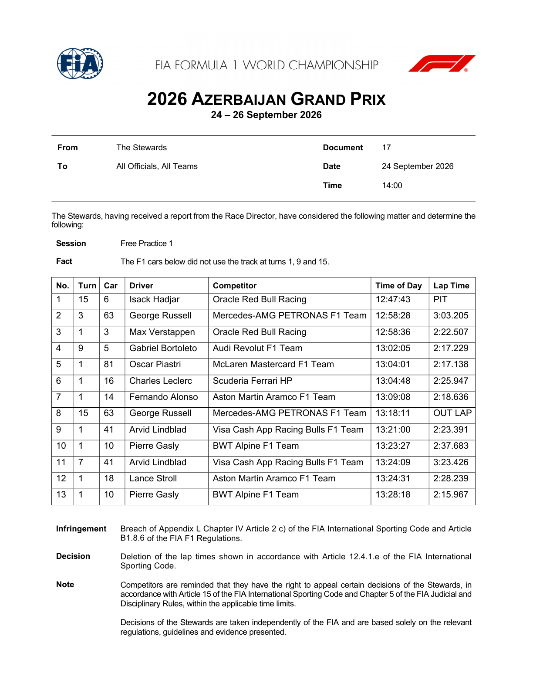 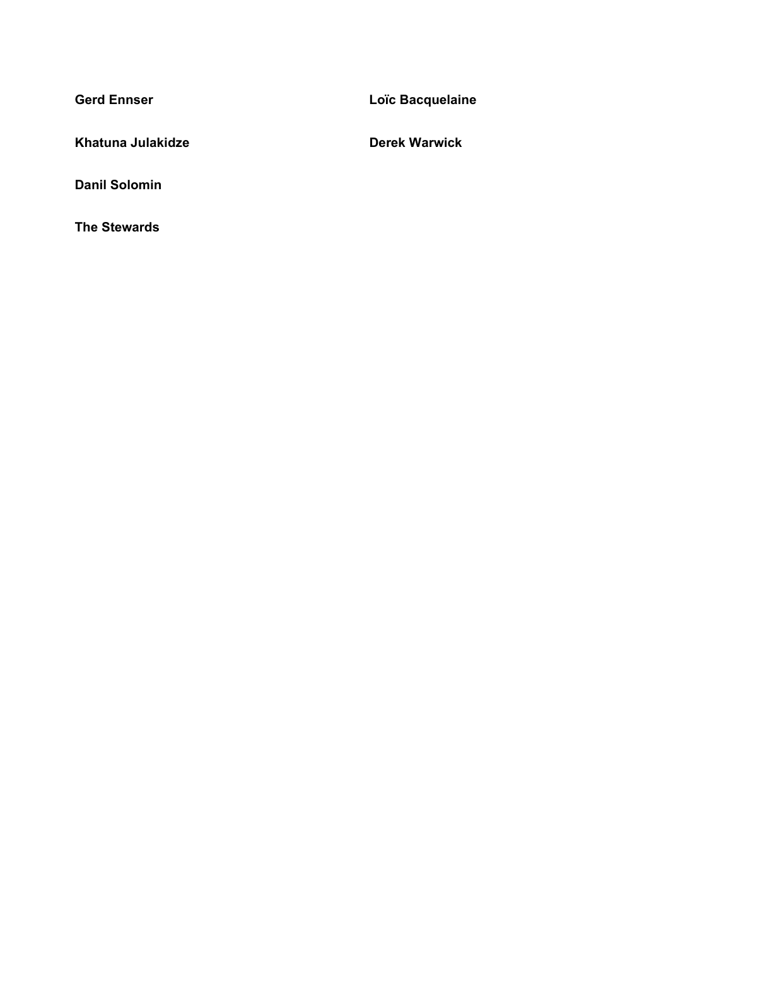 |
| Doc 18 | Valtteri Bottas; Alexander Albon; Pierre Gasly; Lance Stroll; Liam Lawson; Max Verstappen; Oscar Piastri | Free Practice 1 | The F1 cars passed through a double waved yellow flag marshalling sector. | Note Deletion of the lap times shown in accordance with Article 12.4.1.e of the FIA InternationalView FIA decision — 1 pageOriginal FIA PDF. Retrieved 2026-09-26T20:45:36+00:00 (not the issue date). 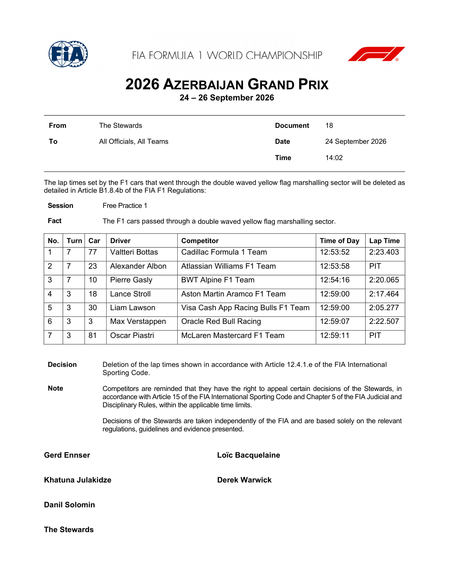 |
| Doc 19 | Valtteri Bottas #77 Cadillac Formula 1 Team | Free Practice 1 | Overtaking under yellow flags | No action No penalty is applied.View FIA decision — 2 pagesOriginal FIA PDF. Retrieved 2026-09-26T20:45:36+00:00 (not the issue date). 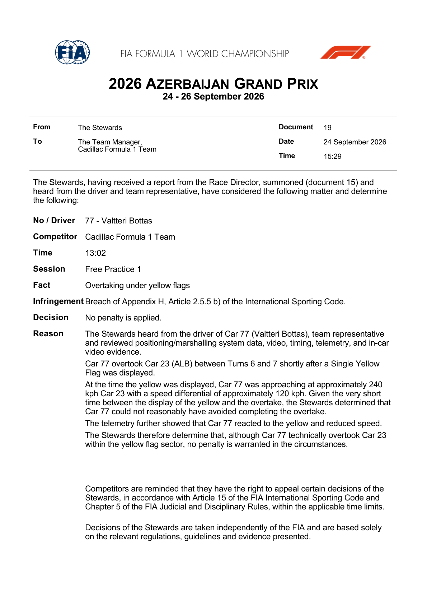  |
| Doc 20 | Fernando Alonso #14 Aston Martin Aramco F1 Team | Free Practice 1 | The following Power Unit elements have been used: | Penalty Drop of 25 grid positions for the next Race in which the driver participatesView FIA decision — 2 pagesOriginal FIA PDF. Retrieved 2026-09-26T20:45:36+00:00 (not the issue date). 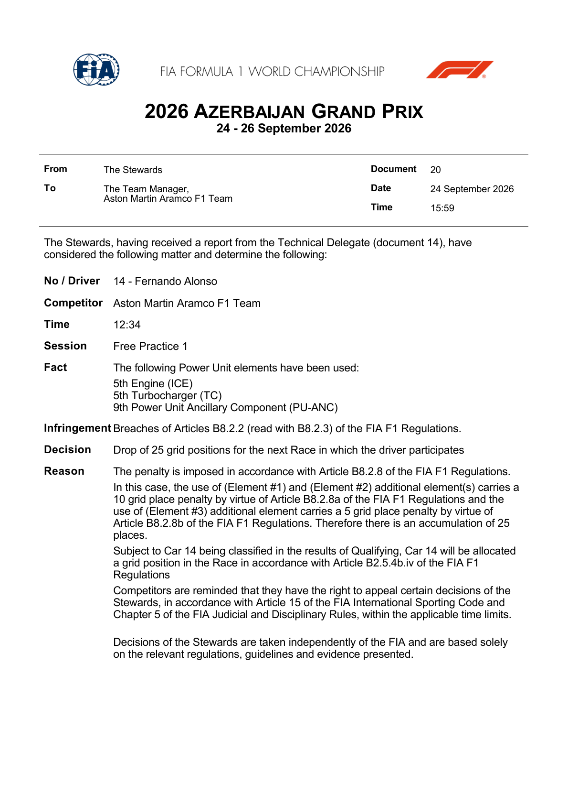 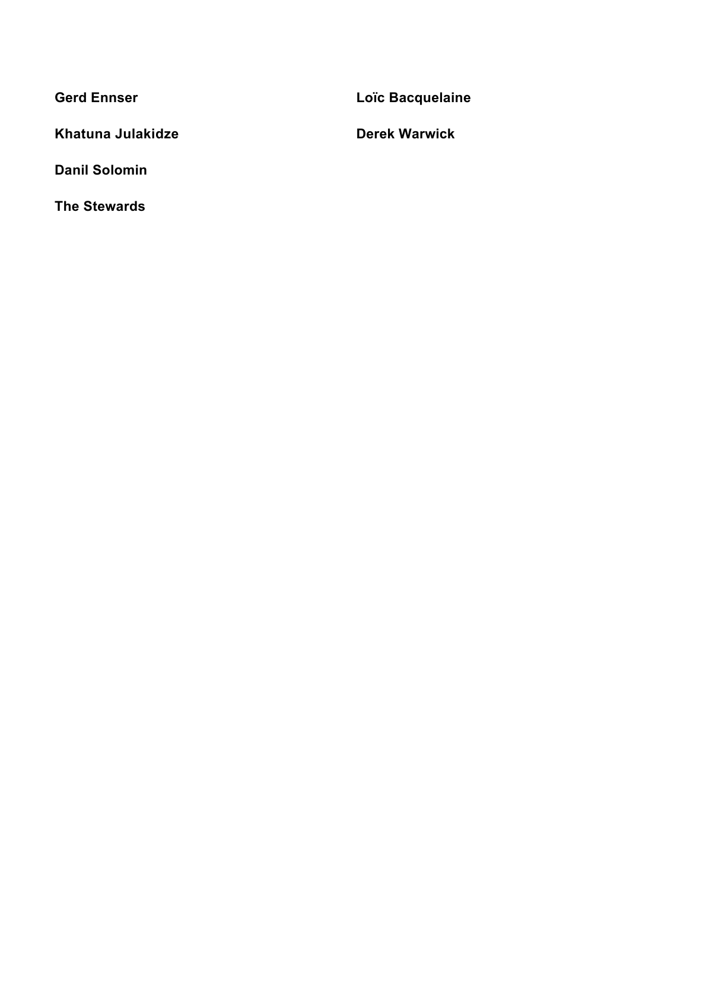 |
| Doc 21 | Lance Stroll #18 Aston Martin Aramco F1 Team | Free Practice 1 | The following Power Unit elements have been used: | Penalty Drop of 20 grid positions for the next Race in which the driver participates.View FIA decision — 2 pagesOriginal FIA PDF. Retrieved 2026-09-26T20:45:36+00:00 (not the issue date). 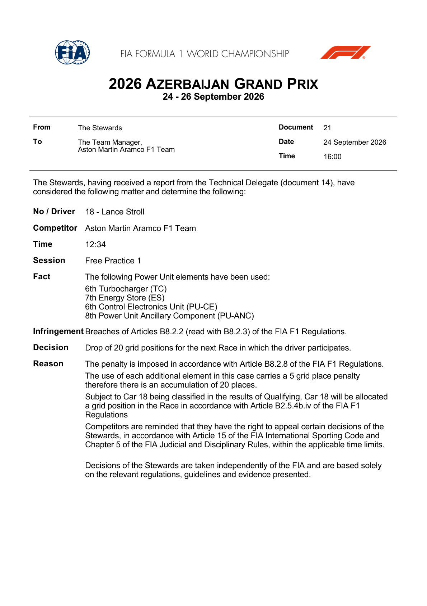 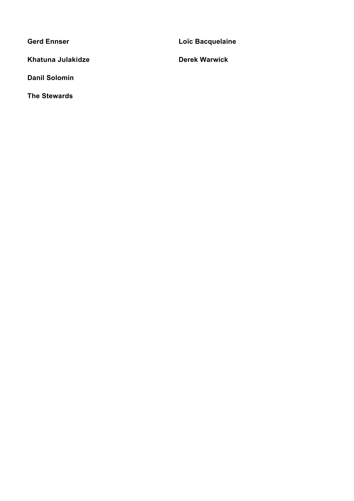 |
| Doc 22 | Lewis Hamilton #44 Scuderia Ferrari HP | Free Practice 2 | Summoned to appear before the Stewards at 17:30 over an alleged breach of Article B4.1.1 of the FIA F1 Regulations — Car 44 allegedly impeding Car 30 at Turn 19, 16:33. | Note Superseded by Document 29 below — the Stewards found Hamilton at fault and issued a driving reprimand. Decision screenshots unavailable. Original FIA PDF. |
| Doc 23 | Liam Lawson #30 Visa Cash App Racing Bulls F1 Team | Free Practice 2 | Summoned to appear before the Stewards at 17:30 over an alleged breach of Article 27 of the Race Director's Competition Notes (V2) and/or Article B4.1.1 — the counterpart summons to Car 44's, same Turn 19 incident. | Note No separate ruling document for Car 30 has appeared in the FIA listing — only Document 29 (Car 44) was published. Treat Lawson's own summons as resolved without a further sanction pending a document that says otherwise, not confirmed dismissed by name. Decision screenshots unavailable. Original FIA PDF. |
| Doc 25 | Franco Colapinto; Lewis Hamilton; Isack Hadjar; Alexander Albon; Pierre Gasly; Carlos Sainz; George Russell; Gabriel Bortoleto; Valtteri Bottas; Esteban Ocon; Max Verstappen | Free Practice 2 | The F1 cars below did not use the track at turns 1, 2, 3, and 15. | Note Deletion of the lap times shown in accordance with Article 12.4.1.e of the FIA InternationalView FIA decision — 2 pagesOriginal FIA PDF. Retrieved 2026-09-26T20:45:36+00:00 (not the issue date). 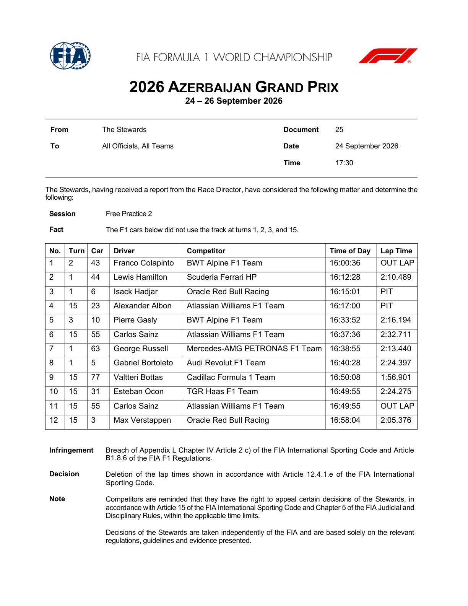 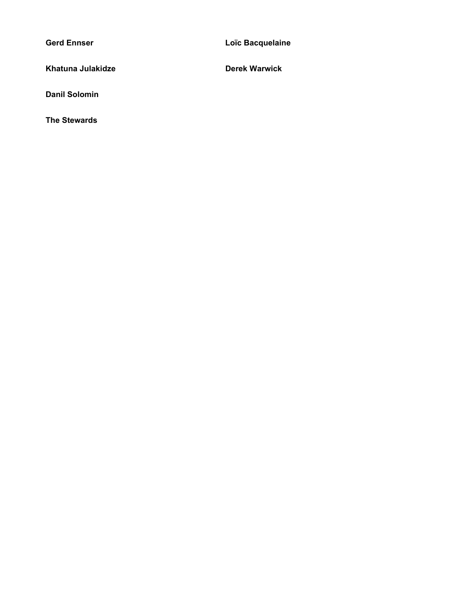 |
| Doc 26 | Alexander Albon; Charles Leclerc; Gabriel Bortoleto; Carlos Sainz; Isack Hadjar | Free Practice 2 | The F1 cars passed through a double waved yellow flag marshalling sector. | Note Deletion of the lap times shown in accordance with Article 12.4.1.e of the FIA InternationalView FIA decision — 1 pageOriginal FIA PDF. Retrieved 2026-09-26T20:45:36+00:00 (not the issue date). 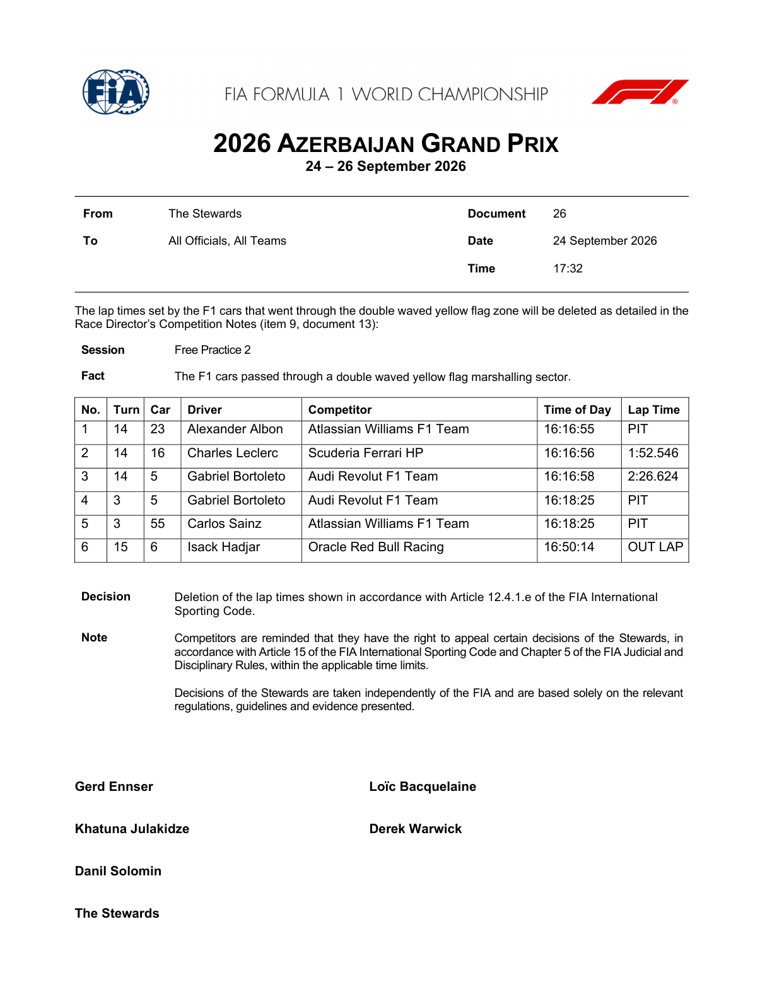 |
| Doc 29 | Lewis Hamilton #44 Scuderia Ferrari HP | Free Practice 2 | Impeding of car 30 | Reprimand Driver: Reprimand (Driving).View FIA decision — 2 pagesOriginal FIA PDF. Retrieved 2026-09-26T20:45:36+00:00 (not the issue date). 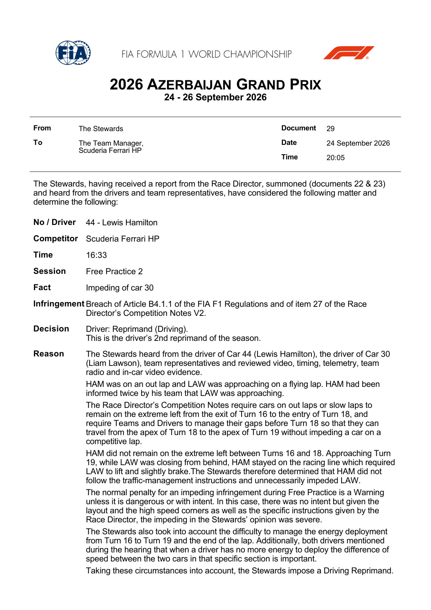 |
| Doc 34 | Fernando Alonso #14 Aston Martin Aramco F1 Team | Free Practice 3 | The following Power Unit elements have been used: | Penalty Drop of 5 grid positions for the next Race in which the driver participates.View FIA decision — 1 pageOriginal FIA PDF. Retrieved 2026-09-26T20:45:36+00:00 (not the issue date). 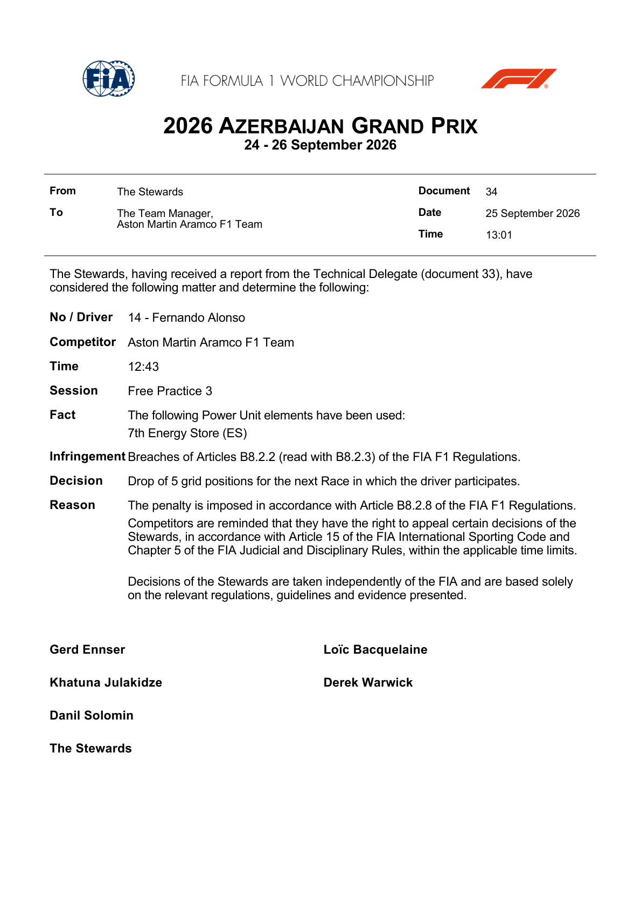 |
| Doc 37 | Arvid Lindblad; Sergio Perez; Lewis Hamilton; Max Verstappen; Kimi Antonelli; Charles Leclerc; Alexander Albon; George Russell; Gabriel Bortoleto; Nico Hulkenberg; Isack Hadjar; Esteban Ocon; Carlos Sainz; Oliver Bearman | Free Practice 3 | The F1 cars below did not use the track at turns 1, 3, 4, 7, 15 and 16. | Note Deletion of the lap times shown in accordance with Article 12.4.1.e of the FIA InternationalView FIA decision — 2 pagesOriginal FIA PDF. Retrieved 2026-09-26T20:45:36+00:00 (not the issue date). 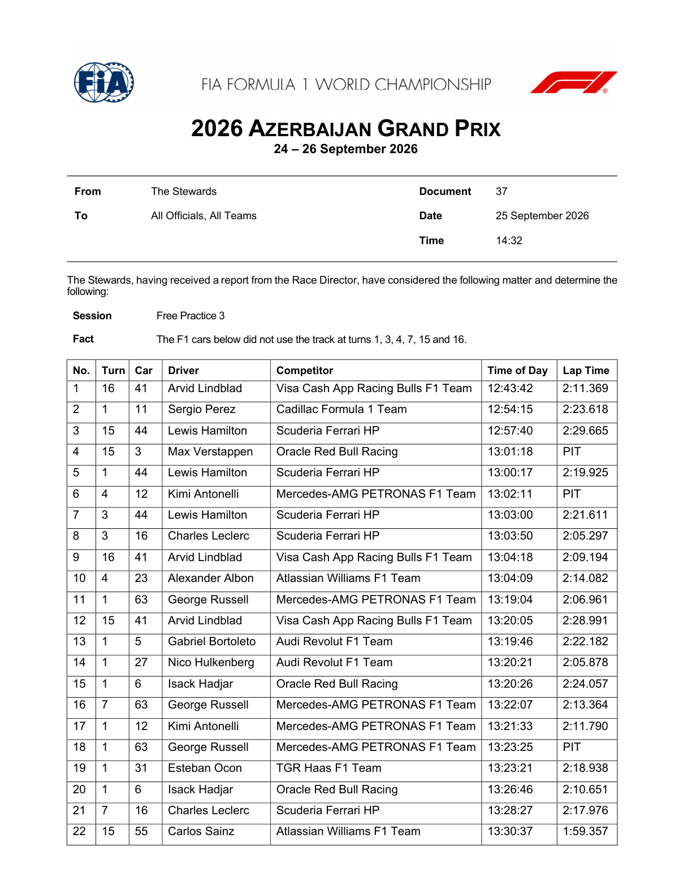 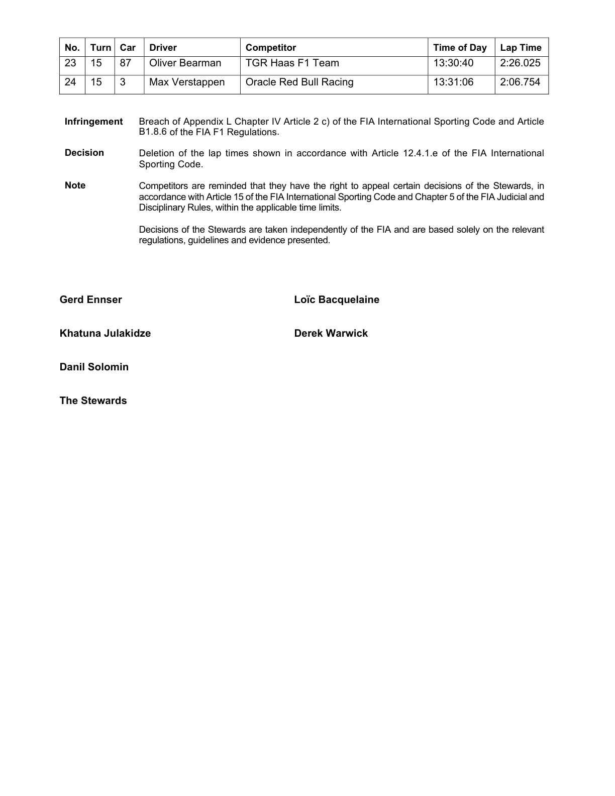 |
| Doc 38 | Arvid Lindblad; Sergio Perez; Esteban Ocon; Pierre Gasly; Lewis Hamilton | Free Practice 3 | The F1 cars passed through a double waved yellow flag marshalling sector. | Note Deletion of the lap times shown in accordance with Article 12.4.1.e of the FIA InternationalView FIA decision — 1 pageOriginal FIA PDF. Retrieved 2026-09-26T19:52:24+00:00 (not the issue date). Latest screenshot refresh failed; these are the last successful images. Check the original PDF for later revisions. 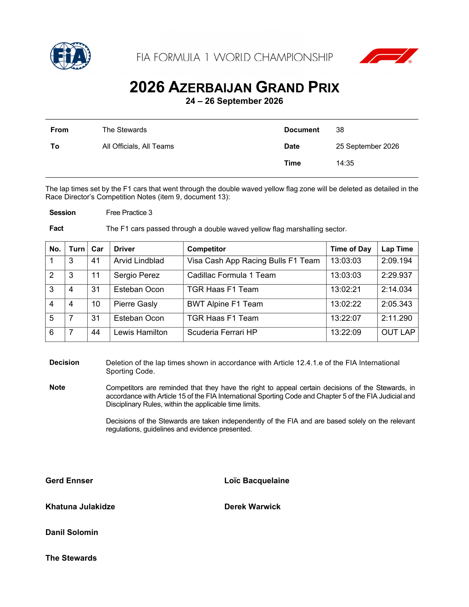 |
| Doc 39 | Carlos Sainz #55 Atlassian Williams F1 Team | Free Practice 3 | Failure to slow for yellow flags | Reprimand Driver: Reprimand (Driving).View FIA decision — 2 pagesOriginal FIA PDF. Retrieved 2026-09-26T20:45:36+00:00 (not the issue date). 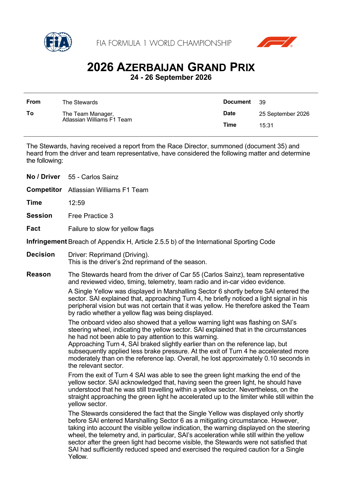 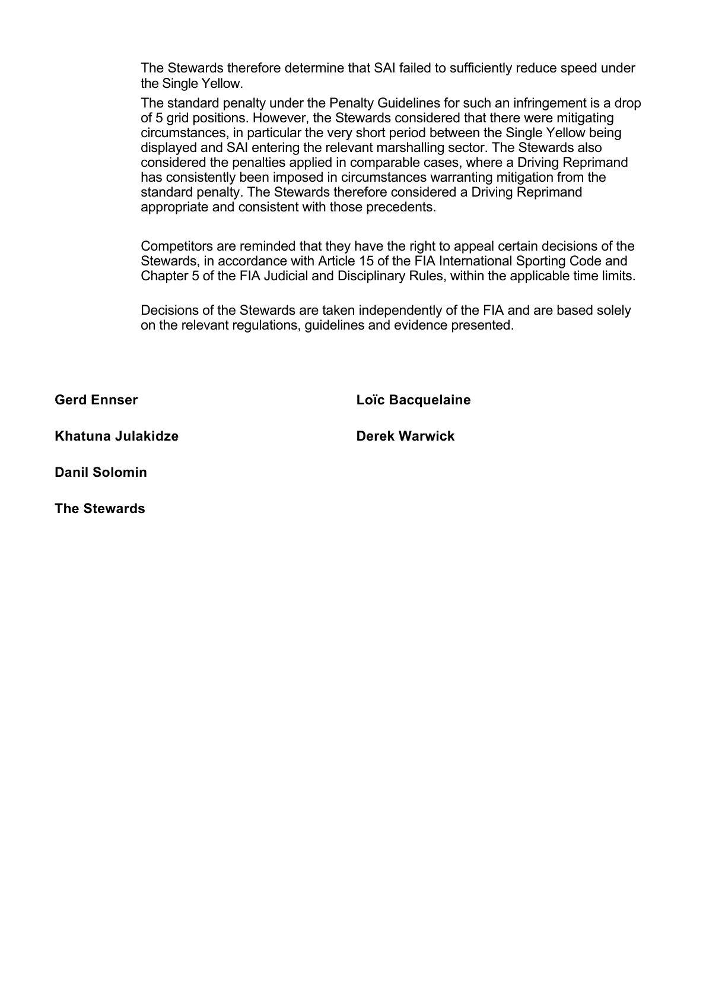 |
| Doc 40 | Arvid Lindblad #41 Visa Cash App Racing Bulls F1 Team | Free Practice 3 | Leaving the track without a justifiable reason at turn 15. | Reprimand Driver: Reprimand (Driving).View FIA decision — 1 pageOriginal FIA PDF. Retrieved 2026-09-26T20:45:36+00:00 (not the issue date). 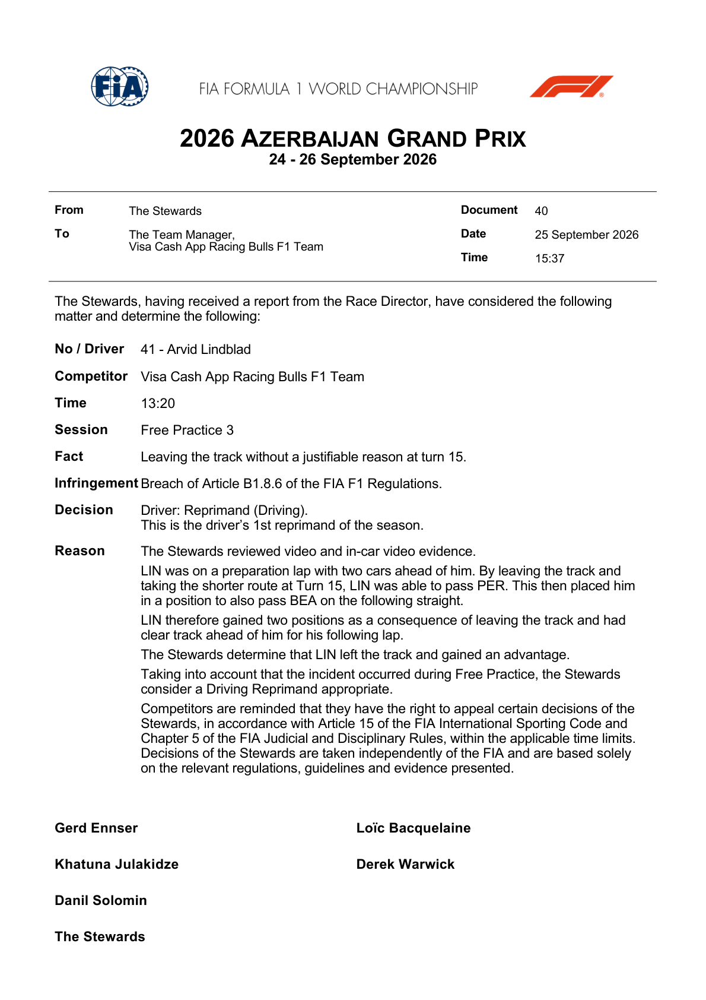 |
| Doc 46 | Lance Stroll; Lando Norris; Alexander Albon; Sergio Perez; Franco Colapinto; Pierre Gasly; Isack Hadjar; Fernando Alonso; Arvid Lindblad; Esteban Ocon; Carlos Sainz | Qualifying | The F1 cars below did not use the track at turns 1, 2, 3, 4, 7, 15 and 16. | Note Deletion of the lap times shown in accordance with Article 12.4.1.e of the FIA InternationalView FIA decision — 2 pagesOriginal FIA PDF. Retrieved 2026-09-26T20:45:36+00:00 (not the issue date). 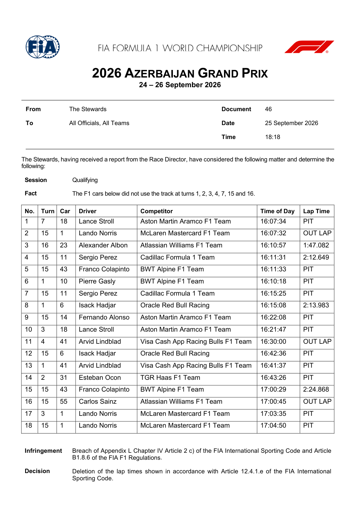 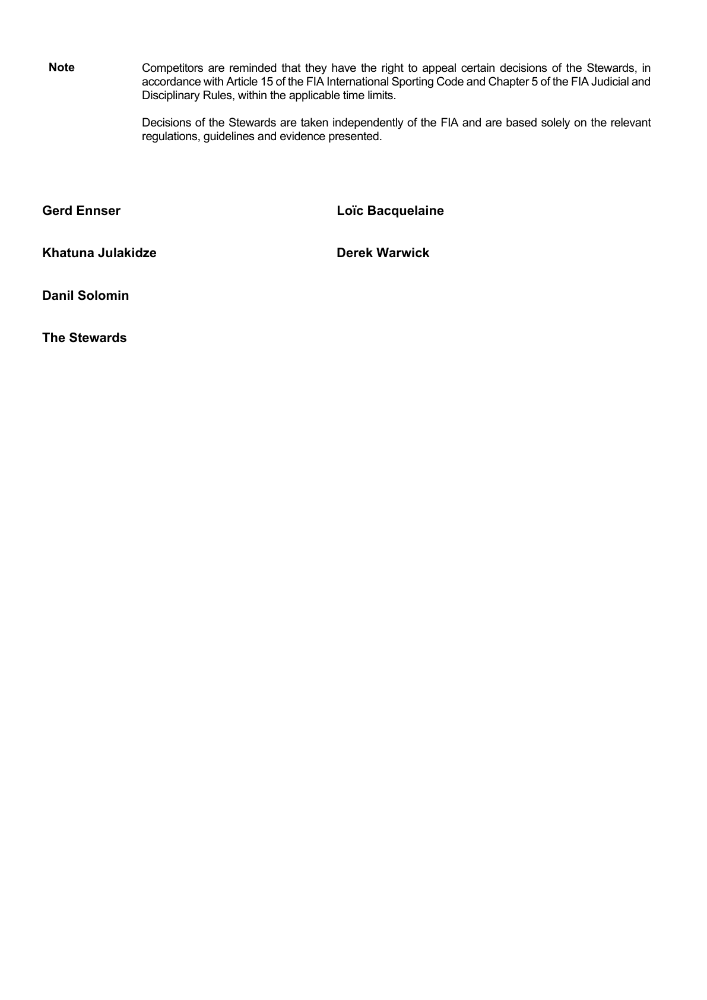 |
| Doc 47 | Liam Lawson; Arvid Lindblad; Charles Leclerc; Valtteri Bottas | Qualifying | The F1 cars passed through a double waved yellow flag marshalling sector. | Note Deletion of the lap times shown in accordance with Article 12.4.1.e of the FIA InternationalView FIA decision — 1 pageOriginal FIA PDF. Retrieved 2026-09-26T20:45:36+00:00 (not the issue date). 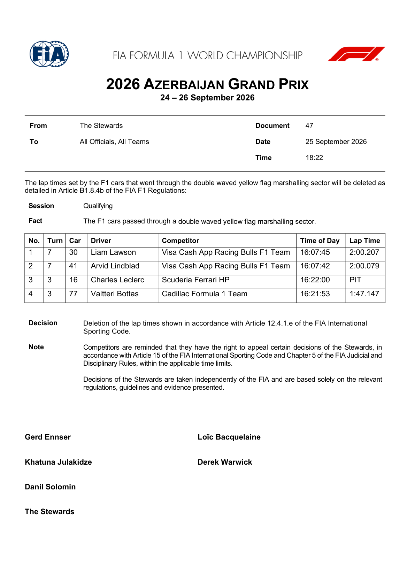 |
| Doc 48 | Sergio Perez #11 Cadillac Formula 1 Team | Qualifying | Car 11 drove at reduced speed on the racing line through Turns 18, 19 and 20, forcing Oscar Piastri to lift on a flying lap after two radio warnings. | Penalty Three-place grid penalty for the next Sprint/Race. Formula1.com's published starting grid lists Perez 20th after the separate Aston Martin engine penalties.View FIA decision — 2 pagesOriginal FIA PDF. Retrieved 2026-09-26T19:52:24+00:00 (not the issue date). Latest screenshot refresh failed; these are the last successful images. Check the original PDF for later revisions. 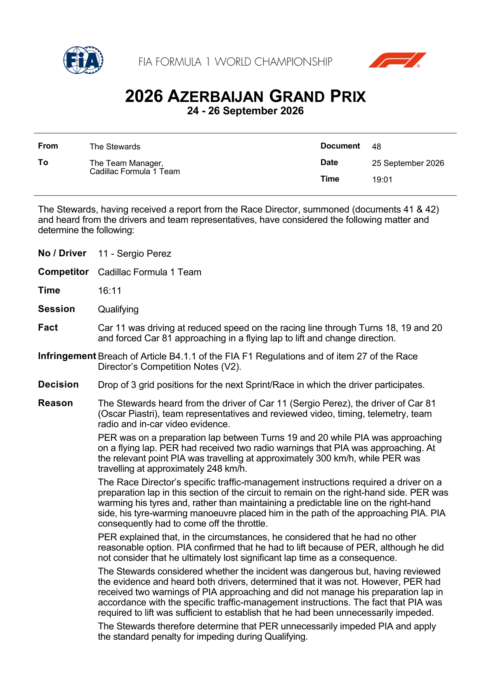 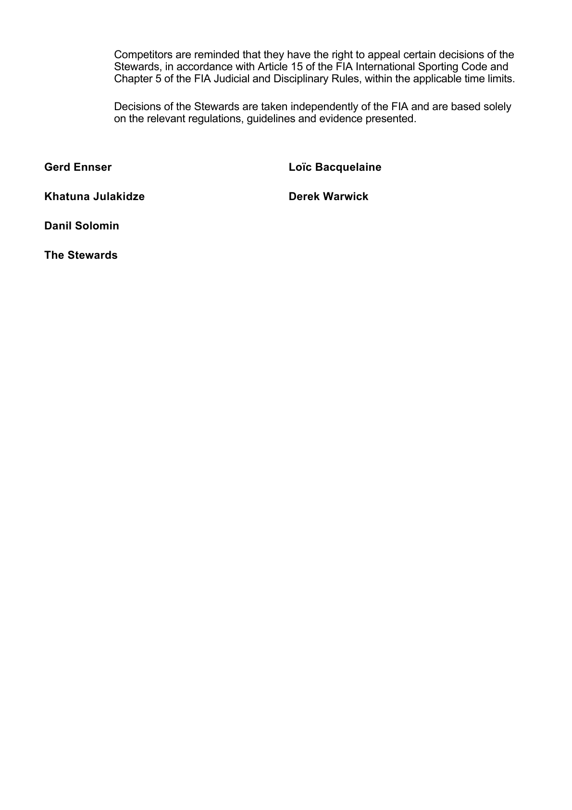 |
| Doc 49 | Carlos Sainz #55 Atlassian Williams F1 Team | Qualifying | The Stewards found Sainz failed to reduce speed under the single yellow in Marshalling Sector 4 despite the visible signal and a team warning. | Penalty Five-place grid penalty and two penalty points (four in the preceding 12 months). Formula1.com's published starting grid lists Sainz 14th.View FIA decision — 2 pagesOriginal FIA PDF. Retrieved 2026-09-26T20:45:36+00:00 (not the issue date). 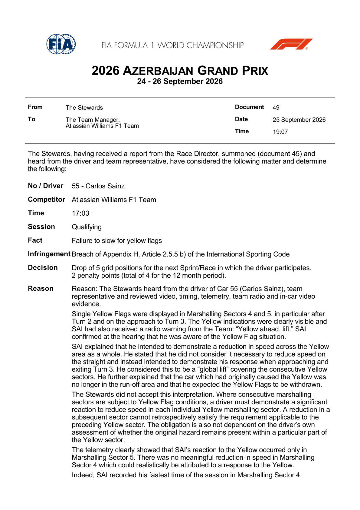 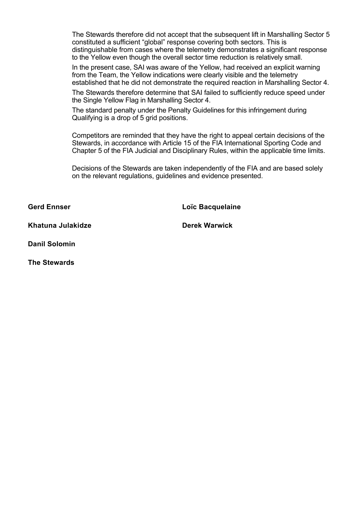 |
| Doc 60 | Gabriel Bortoleto #5 Audi Revolut F1 Team | Race | Summoned over an alleged breach relating to overtaking under yellow flags and/or safety-car procedure at 16:12. | Note Resolved by Document 68: the Stewards imposed a 10-second time penalty for overtaking under yellow flags. The final Race classification lists Bortoleto 15th. Decision screenshots unavailable. Original FIA PDF. |
| Doc 61 | Carlos Sainz #55 Atlassian Williams F1 Team | Pre-race procedure | Summoned over an alleged breach of the International Sporting Code and Race Director's Competition Note 13.6 concerning a practice start at 14:22. | Note Resolved by Document 70: the Stewards issued a warning after finding the team's incorrect instruction a significant mitigating factor. Decision screenshots unavailable. Original FIA PDF. |
| Doc 62 | Isack Hadjar #6 Oracle Red Bull Racing | Pre-race procedure | Summoned over an alleged breach of the International Sporting Code and Race Director's Competition Note 13.6 concerning a practice start at 14:20. | Note Resolved by Document 69: the Stewards issued a warning, taking mitigating circumstances into account. Decision screenshots unavailable. Original FIA PDF. |
| Doc 65 | Arvid Lindblad #41 Visa Cash App Racing Bulls F1 Team | Race | Collision between Cars 41 and 30 at Turn 1. | No action No further action.View FIA decision — 2 pagesOriginal FIA PDF. Retrieved 2026-09-26T19:52:24+00:00 (not the issue date). Latest screenshot refresh failed; these are the last successful images. Check the original PDF for later revisions. 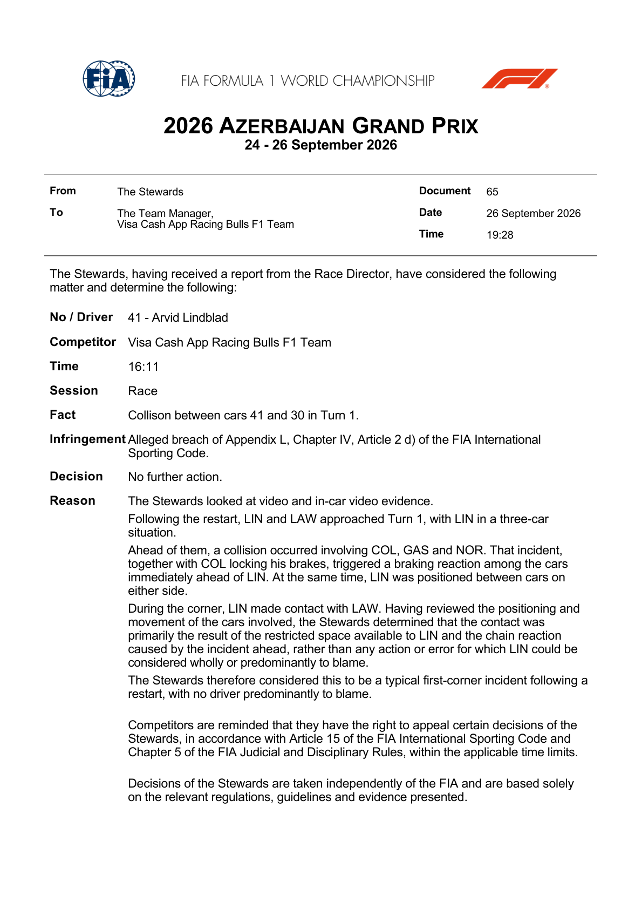 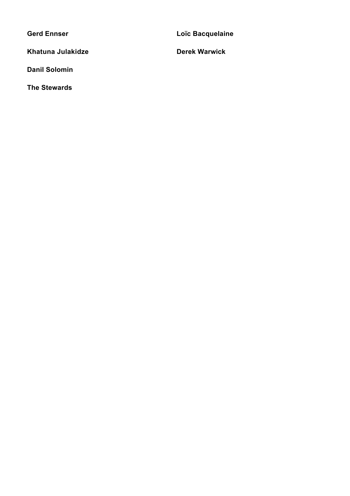 |
| Doc 66 | Franco Colapinto #43 BWT Alpine F1 Team | Race | Collision with Car 10 at Turn 1. | Penalty A 10-second time penalty, converted to a drop of five grid positions at the next race in which the driver participates.View FIA decision — 2 pagesOriginal FIA PDF. Retrieved 2026-09-26T19:52:24+00:00 (not the issue date). Latest screenshot refresh failed; these are the last successful images. Check the original PDF for later revisions. 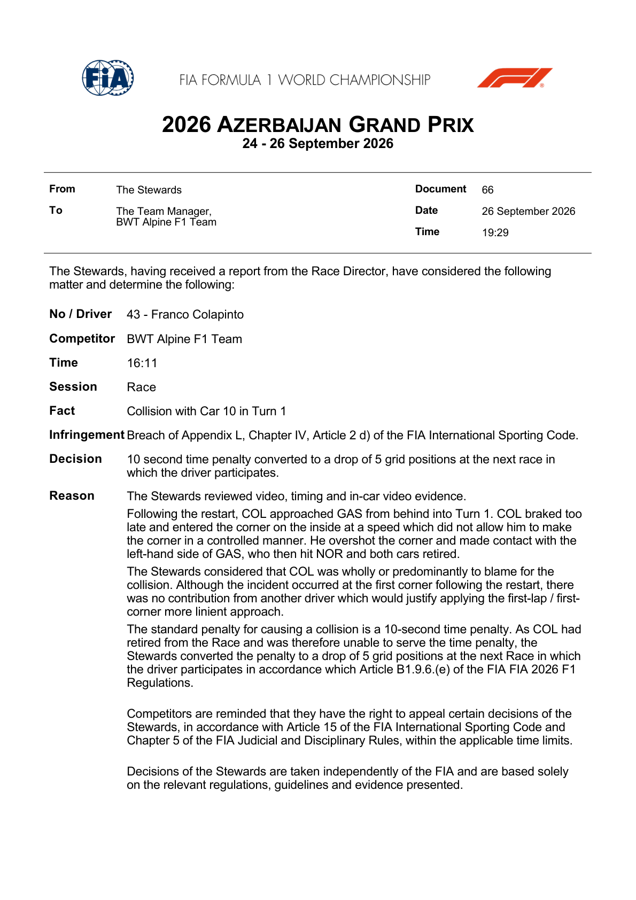  |
| Doc 67 | Valtteri Bottas #77 Cadillac Formula 1 Team | Race | Car 77 left the track at Turn 15 and made contact with the wall. | No action No further action.View FIA decision — 2 pagesOriginal FIA PDF. Retrieved 2026-09-26T19:52:24+00:00 (not the issue date). Latest screenshot refresh failed; these are the last successful images. Check the original PDF for later revisions. 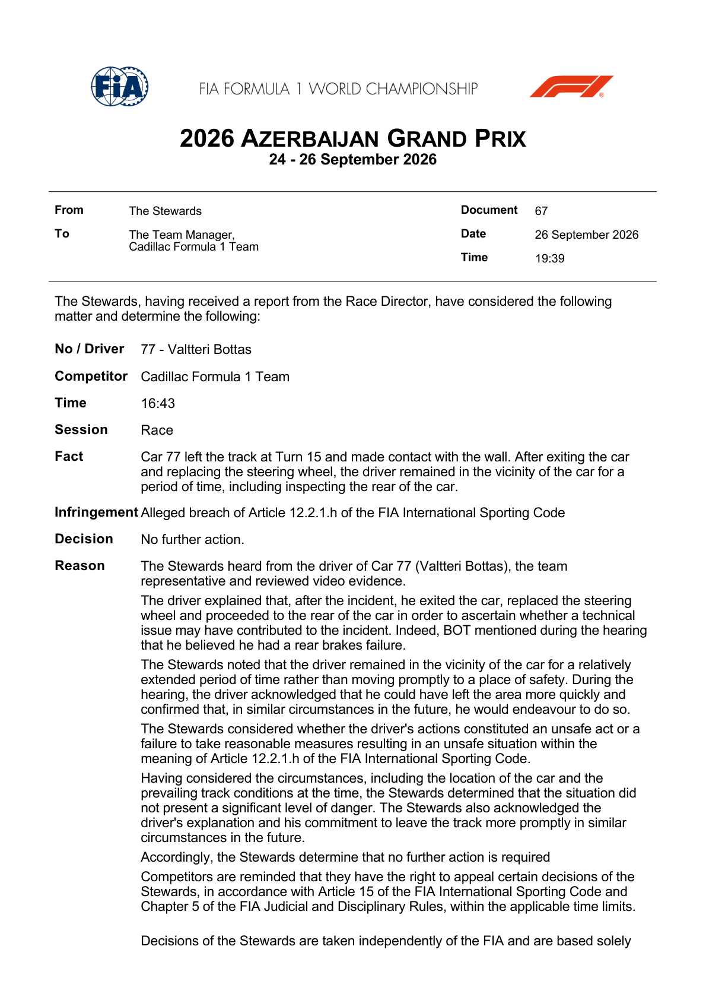 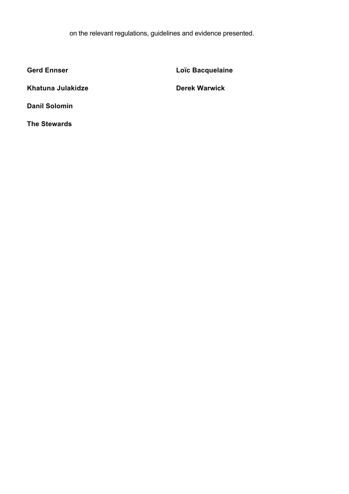 |
| Doc 68 | Gabriel Bortoleto #5 Audi Revolut F1 Team | Race | Overtaking under yellow flags | Penalty 10 second time penalty.View FIA decision — 2 pagesOriginal FIA PDF. Retrieved 2026-09-26T20:45:36+00:00 (not the issue date). 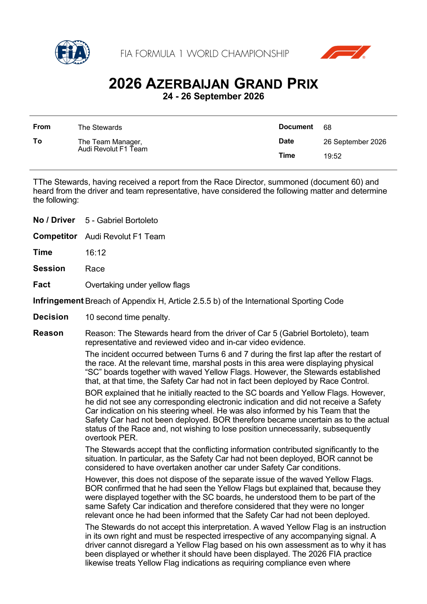 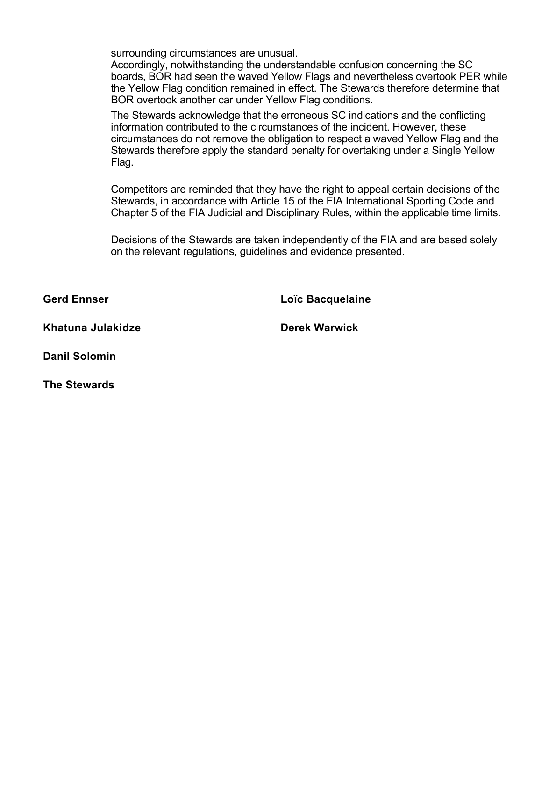 |
| Doc 69 | Isack Hadjar #6 Oracle Red Bull Racing | Reconnaissance Laps | Failure to follow Race Directors instruction. | Warning Driver: Warning.View FIA decision — 2 pagesOriginal FIA PDF. Retrieved 2026-09-26T20:45:36+00:00 (not the issue date). 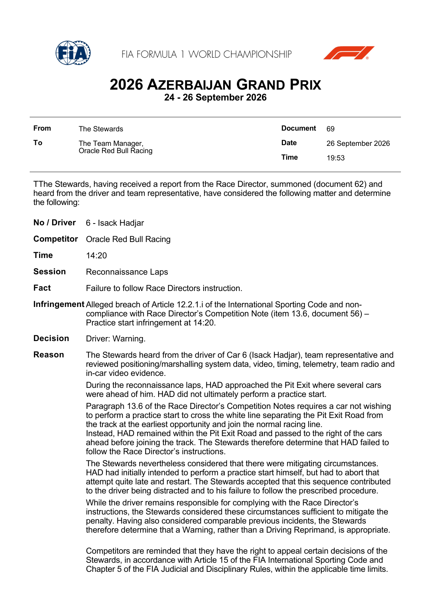 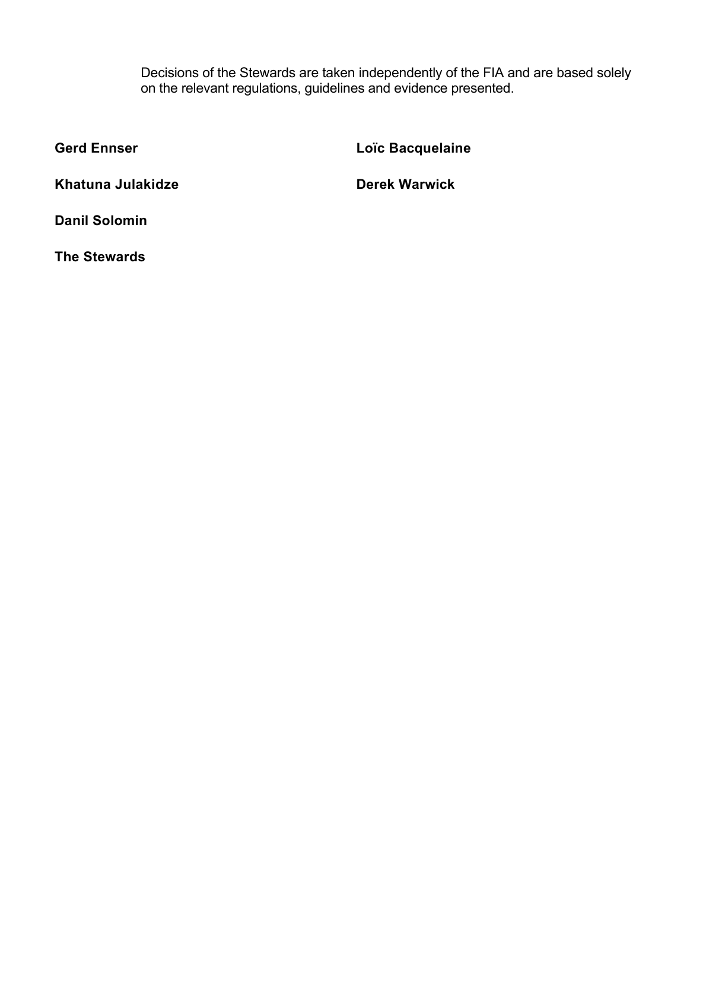 |
| Doc 70 | Carlos Sainz #55 Atlassian Williams F1 Team | Reconnaissance Laps | Failure to follow Race Directors instruction. | Warning Driver: Warning.View FIA decision — 2 pagesOriginal FIA PDF. Retrieved 2026-09-26T20:45:36+00:00 (not the issue date). 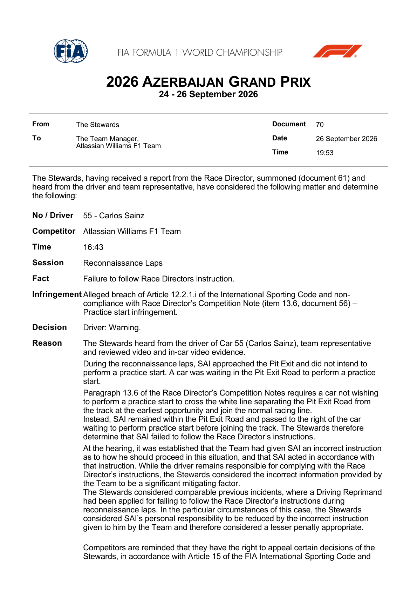 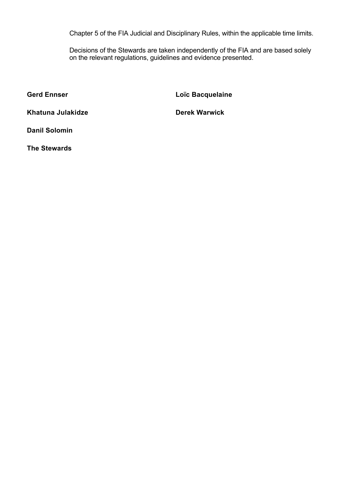 |
Officials and document status
Competition Visa V2, Document 7: FIA stewards Gerd Ennser, Loïc Bacquelaine, Khatuna Julakidze and Derek Warwick; ASN-appointed steward Danil Solomin. Race Director and Safety Delegate Rui Marques; Technical Delegate Jo Bauer; Sporting Delegate Tim Malyon; Deputy Race Director Paul Burns. The visa names the officials; it is not an infringement decision.
Source: FIA Competition Visa V2, Appendix B3, PDF pages 4–5.
The FIA event listing contained 65 PDFs at its successful 15:40 UTC discovery check. The late-race Documents 65–67 are listed above with their published decisions. At the latest successful recheck, 18:53 UTC, the listing contained 70 PDFs; Documents 68–70 resolve the Bortoleto, Sainz and Hadjar summonses above. These are timestamped source snapshots, not claims that no later filing can appear.
Source: FIA Document 29, Infringement — Car 44 — Impeding Car 30, 24 September 2026.
Source: FIA Document 34, Infringement — Car 14 — PU Element, 25 September 2026.
Source: FIA Document 48, Infringement — Car 11 — Impeding Car 81, 25 September 2026.
Source: FIA Document 49, Infringement — Car 55 — Failure to Slow for Yellow Flags, 25 September 2026.
Document 2 clears the inspected front-suspension items on Russell's Madrid car; it is a compliance report, not a Baku sanction. See Reliability for its scope and Circuit for the race-control instructions.